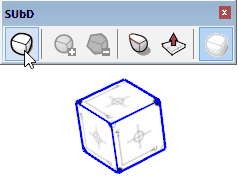
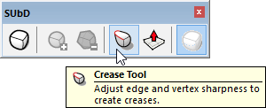
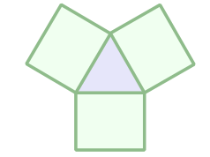
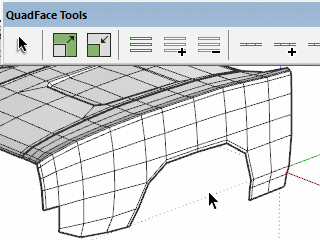

Subdivide to Smooth the Mesh

- Select a group or component containing only faces.
- Toggle Subdivision on or off.
Adjust the smoothness by increasing or decreasing the number of smoothing iterations.
Toggle subdivision off to return to the control-mesh whenever you need to edit the geometry.
Refine the Mesh with Creasing

Create creases in the subdivided mesh to refine the shape without having to add extra control loops in the control mesh.

Optimized for Quads

SUbD uses a Catmull-Clark based algorithm for the subdivision. This type of subdivision is optimized for quadrilaterals.
For each subdivision each quad produce four new quads.
Each triangle produce three new quads.
Other polygons are triangulated prior to subdivision.
Next
Why Work with Quads?

When you have a mesh based on quads it add a lot of benefits. The mesh becomes more regular and predictable. The grid structure that comes from quads provide meshes with directions of flow.
Tools can follow an edge and select loops in a predictable order.
Or they can select every opposite edge, making a ring selection.
UV mapping is also easier - the grid makes the mesh easier to map seamless texture mapping.
More
- "Modeling with Quads or Triangles" (digitaltutors.com)
- "Why Are Ngons and Triangles so Bad?" (digitaltutors.com)
- "Topology Guides" (topology-guides.tumblr.com)
- "Quads, Tris, & N-Gons" (resources.squid.io)
Working with Quads in SketchUp
When working with quad based meshes you quickly discover the need for quads where the vertices aren't coplanar.
In SketchUp this can be a challenge because SketchUp's Auto-Fold feature will break a quad into two triangles once it's vertices isn't coplanar any more.
To allow extensions to work with quads that are not coplanar they need to be able to determine which pair of triangles represent a quad. There is no official standard for this, but the de-facto standard is the QuadFace Tools type of quads.
The definition of a QuadFace Tools quad is that two triangles share an edge which is soft and smooth - with Cast Shadows turned off.
It is highly recommended that you also install QuadFace Tools to assist in creating quad based meshes for subdividing with SUbD. I is a core tool for creating ideal geometry that subdivide well.
More
Need assistance using SUbD?
For general assistance on how to use SUbD, please post your question at the SketchUp Forums.

Asking your question in the forums helps other people by making it readable to everyone. Additionally you will benefit from the collective knowledge of the community and most likely get a faster response.
Problems with licenses, purchases or bugs?
Enquires that doesn't fall into the above category can be submitted via the contact form.